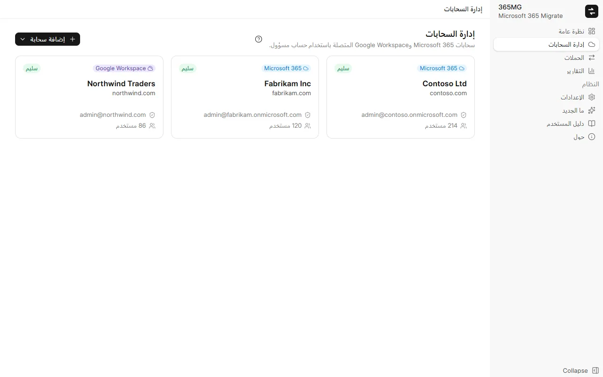
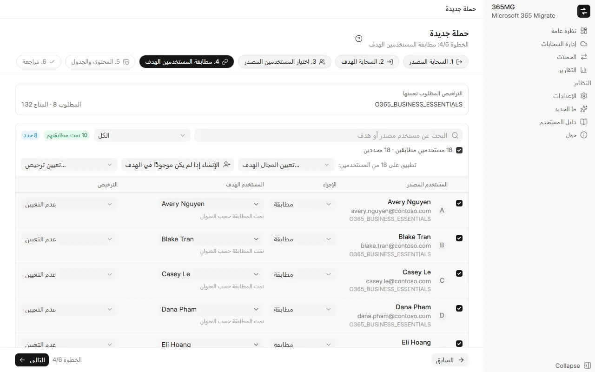

دليل المستخدم
من تثبيت 365MG حتى التقرير الأخير. يحتوي كل جزء على لقطات شاشة؛ وتعيد الجولات الإرشادية عرض المهام الرئيسية بمؤشر متحرك.
1. التثبيت
يعمل 365MG على Windows 10 أو 11 (64 بت) مع Microsoft Edge WebView2، المضمّن بالفعل في Windows. يوفّر المؤلف برنامج التثبيت: راسله على العنوان أدناه.
- شغّل
365MG_x.y.z_x64-setup.exeواتبع خطوات برنامج التثبيت. - افتح 365MG من قائمة ابدأ. تبقى البيانات على هذا الكمبيوتر في
%APPDATA%\com.tuanhd.365mg. - في الإعدادات، اختر لغة الواجهة ومجلدًا مؤقتًا على محرك أقراص ثانوي.
2. قبل أن تبدأ
- حساب مسؤول عام في كل من المستأجر المصدر والمستأجر الهدف.
- عدد كافٍ من التراخيص التي تتضمن Exchange Online (وOneDrive) في الهدف للمستخدمين الذين تنشئهم أو تطابقهم.
- كمبيوتر يمكن أن يبقى قيد التشغيل أثناء النسخ، مع اتصال سريع ومستقر: فالبيانات تمر عبره.
- محرك أقراص ثانوي للمجلد المؤقت؛ لا تمر عبره إلا ملفات OneDrive التي يبلغ حجمها 4 MB أو أكثر.
3. إضافة المستأجرين
- افتح المستأجرون وانقر على إضافة مستأجر.
- سجّل الدخول كمسؤول عام في نافذة المستعرض التي تُفتح واقبل الأذونات.
- بعد العودة إلى 365MG، يعرض المستأجر مجالاته وعمليات التحقق من الأذونات وتراخيصه. استخدم التحقق من الأذونات بعد تغيير أي شيء في مركز الإدارة.

4. إنشاء حملة
تنقل الحملة مجموعة من المستخدمين من مستأجر مصدر واحد إلى مستأجر هدف واحد. يتكوّن المعالج من ست خطوات؛ يبقى العنوان والخطوات وعوامل التصفية ظاهرة في الأعلى، وتبقى أزرار السابق / التالي / حفظ الحملة في الأسفل.
- المستأجر المصدر والمستأجر الهدف: خطوة لكل منهما.
- اختيار المستخدمين المصدر: صفِّ حسب الترخيص أو المجال أو الحالة، وحدّد المستخدمين في القائمة ثم أضفهم إلى المحدَّدين.
- مطابقة المستخدمين الهدف: يقترح 365MG مستخدمًا هدفًا حسب العنوان أو الاسم المستعار أو اسم العرض. حدّد الصفوف ثم طبّق تعيين المجال الهدف… أو الإنشاء إذا لم يكن موجودًا في الهدف أو تعيين ترخيص… دفعة واحدة؛ ويحدّد مربع الاختيار أعلى القائمة كل الصفوف التي يعرضها عامل التصفية.
- المحتوى والجدول: البريد وOneDrive وجهات الاتصال والتقويم؛ تخطي البريد العشوائي؛ التشغيل مرة واحدة أو كل N ساعات؛ عدد المسارات.
- مراجعة: راجع الملخص والتراخيص المطلوبة، ثم انقر حفظ الحملة.

5. تجهيز المستخدمين الهدف
في صفحة الحملة، يؤدي إنشاء المستخدمين وتعيين التراخيص إلى إنشاء المستخدمين الهدف الذين عليهم علامة "إنشاء" ومنح كل مستخدم الترخيص المختار. تعرض الصفوف التي تفشل السبب؛ أصلحه وشغّل مرة أخرى.
يحصل المستخدمون الجدد على كلمة مرور أولية عشوائية يجب عليهم تغييرها عند أول تسجيل دخول. صدّرها من القائمة ⋯ كملف CSV، وسلّمها، ثم احذف الملف.
6. الموجات والتشغيل التجريبي
في علامة التبويب المستخدمون، حدّد المستخدمين واستخدم نقل إلى موجة لتقسيم ترحيل كبير. يمكن بعد ذلك لشريط التشغيل بدء موجة واحدة في كل مرة؛ وتستمر عمليات التشغيل المجدولة في مزامنة كل موجة سبق فتحها.
يقرأ تشغيل تجريبي (عدّ فقط) كلا الجانبين ويبلغ عن عدد العناصر والملفات والميغابايتات التي سينسخها التشغيل الفعلي. لا يكتب شيئًا في الهدف، ويتحقق أيضًا من وجود كل علبة بريد وكل OneDrive في الهدف.
7. التشغيل والإيقاف المؤقت والاستئناف
يعرض شريط التشغيل أعلى كل علامة تبويب في الحملة ما تفعله الحملة وما سيأتي بعد ذلك.
| الحالة | ما يُعرض | الأزرار |
|---|---|---|
| لم يتم التشغيل بعد | الجدول | البدء الآن، تشغيل تجريبي |
| جارٍ النسخ | الوقت المنقضي، والمسارات قيد التشغيل وفي الانتظار | إيقاف مؤقت |
| متوقف مؤقتًا | آخر تشغيل | استئناف (ينسخ الباقي) |
| تمت المزامنة | وقت الانتهاء والتشغيل المجدول التالي | التشغيل مرة أخرى (جلب البيانات الجديدة)، إيقاف الجدول مؤقتًا |
يؤدي الإيقاف المؤقت إلى إيقاف المسارات وتعليق الجدول. يبقى كل ما نُسخ في السجلات، لذا فإن الاستئناف لا ينسخ أي شيء مرتين أبدًا. تعرض علامة التبويب تقدّم النسخ كل علبة بريد وكل OneDrive مع سرعته؛ ويُعاد تشغيل المسار الذي يتوقف عن التقدم تلقائيًا.
8. يحتاج إلى قرارك
عندما يواجه التشغيل أمرًا لا ينبغي له أن يحسمه وحده، تعرض الحملة لوحة يحتاج إلى قرارك مجمّعة حسب النوع، مع شرح والإجراءات المتاحة لكل مستخدم.
| النوع | ما يجب فعله |
|---|---|
| علبة البريد الهدف لا تعمل | رخّص المستخدم (أو اجعلها علبة بريد مشتركة)، وانتظر 15–60 دقيقة، ثم التحقق مرة أخرى. إذا أُزيل الترخيص عمدًا، فاختر تخطي هذا المستخدم. |
| لا يوجد OneDrive في الهدف | نسخ أمر إنشاء OneDrive، وشغّله في Windows PowerShell كمسؤول SharePoint، أو اطلب من المستخدم تسجيل الدخول مرة واحدة؛ ثم تحقق مرة أخرى. |
| تمت إعادة إنشاء المستخدم الهدف | النسخ مرة أخرى من البداية إلى علبة البريد أو OneDrive الجديدة، أو التخطي. |
| عناصر بنتيجة غير معروفة | إعادة الإرسال (العنصر الموجود بالفعل يصبح نسختين) أو تخطي هذه العناصر. |
| الهدف يحتوي على عدد أقل مما تم نسخه | في العادة حُذفت عمدًا في الهدف؛ أكّد العلم بذلك بالنقر على حسنًا. |

9. مجموعات البريد
في علامة التبويب مجموعات البريد، اختر المجموعات المصدر وانقر على إنشاء المجموعات وإضافة الأعضاء. لا يستطيع Graph إنشاء سوى مجموعات Microsoft 365، لذا تصبح قوائم التوزيع ومجموعات الأمان الممكّنة للبريد مجموعات Microsoft 365 بالاسم المستعار نفسه، تسلّم البريد إلى علب الوارد الخاصة بالأعضاء وتقبل المرسلين من خارج المؤسسة. يُدرج الأعضاء الذين ليس لهم مستخدم هدف لكل مجموعة.
10. التقارير
تعرض التقارير، لكل حملة، أعداد المصدر والمنسوخ لكل مستخدم وفي المجموع، والمستخدمين الذين يحتاجون إلى مراجعة، والمجموعات والملاحظات. يكتب تصدير HTML صفحة واحدة (بنمطين فاتح وداكن، مع البحث والتصفية) ويفتحها؛ وتسرد ملفات CSV المصدّرة المستخدمين أو المجموعات.
11. الإعدادات واللغات
- اللغة: تسع لغات، تُطبَّق فورًا؛ وتحوّل العربية التخطيط إلى الاتجاه من اليمين إلى اليسار.
- المجلد المؤقت: أبقه بعيدًا عن محرك الأقراص C.
- اعتبار المسار عالقًا بعد: عدد الدقائق دون تقدم قبل إعادة تشغيل المسار (مرتين كحد أقصى).
12. التحديثات
يسرد ما الجديد تغييرات كل إصدار. عند نشر إصدار أحدث، يظهر في الشريط الجانبي؛ ويؤدي التحديث إلى x.y.z إلى تنزيله والتحقق من توقيع المؤلف وإغلاق التطبيق وتثبيته وإعادة فتحه. أوقف الحملات قيد التشغيل مؤقتًا أولاً، ثم استأنفها بعد ذلك.
13. استكشاف الأخطاء وإصلاحها
| العَرَض | السبب والحل |
|---|---|
| "في انتظار سريان أذونات تطبيق نقل البيانات" | يستغرق التطبيق الجديد بضع دقائق حتى يقبله Exchange وSharePoint؛ وينتظر التشغيل حتى 30 دقيقة من تلقاء نفسه. |
| انخفاض السرعة وظهور رسائل "تقييد" كثيرة | يفرض Exchange أو SharePoint حدودًا لكل علبة بريد ولكل تطبيق. لا تفيد زيادة المسارات علبة بريد واحدة؛ بل تفيد عندما تكون علب بريد كثيرة في الانتظار. |
| أعداد الهدف أقل من المصدر | راجع ملاحظات التقرير: البريد العشوائي الذي تم تخطيه، أو العناصر المستبعدة بقرار، أو البريد المحذوف في الهدف. |
| علبة بريد تحتوي على بريد بالفعل في الهدف | يرفض 365MG النسخ إليها في التشغيل الأول. اسمح بذلك في الحملة فقط إذا لم تنسخ أي أداة أخرى إليها. |